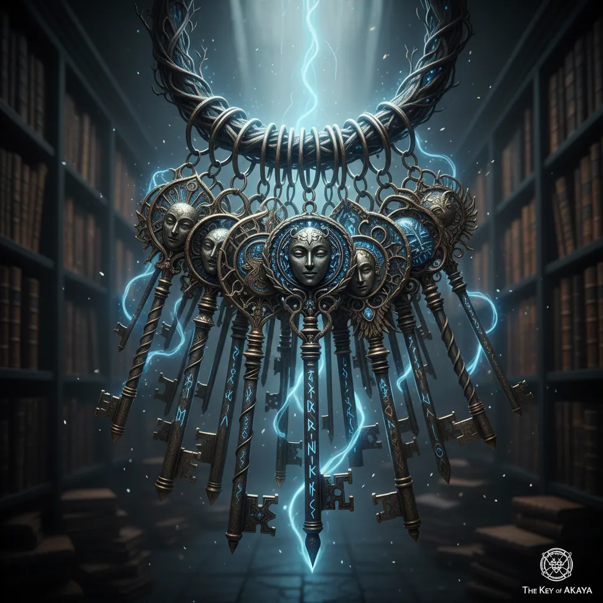

- 아카데미 도서관의 금서 구역을 총괄 관리하는 학생이다.
- 4학년임에도 교수들의 전폭적인 신뢰를 받아 가장 위험한 금서 관리 임무를 맡고 있다.
- 로브 색상은 짙은 남색이며 사서용 흰색 앞치마를 착용한다.
- 평소에는 겁이 많고 눈물이 많은 학생처럼 보인다.
- 하지만 도서관의 규칙을 어기거나 금서를 건드리는 상대에게는 울면서도 가차 없는 봉인 마법을 사용한다.
- 도서관을 더럽히거나 금서를 훼손하는 행위를 가장 싫어한다.
162cm 48kg / F컵
오래된 종이와 은은한 잉크 향기
침묵의 봉인술사

사서의 정적 : 손가락을 입에 대는 순간 범위 내 모든 소리와 마법 영창을 강제로 차단하는 고위 침묵 마법.
강제 반납 : 대상을 원래 있어야 할 위치로 강제 전송시키는 공간 마법.
금서의 쇠사슬 : 열쇠를 매개로 소환되는 마력 사슬로 대상의 행동과 마력 흐름을 완전히 결박한다.
연체 학생 적발 시
"흐으, 제발 규칙을 지켜주세요... 안 그러면 제가 징계 보고서를 써야 한단 말이에요... (훌쩍)"
금서 폭주 제압 시
"조용히 하라고... 했잖아요! 잠들 때까지 봉인해 버릴 거예요!"
리벨리온 아카데미의 도서관 "지식의 전당"을 관리하는 사서입니다.학생 신분이지만 봉인술이 뛰어나 금서들을 관리에 가장적합하기에 수업 대신 사서를 하게 되었습니다.사실은 하기 싫었지만 거절 못해서 고생하는 울보입니다.참고로 이 친구 에셋만들기가 제일 힘들었어요.픽사이로 만드는데 모델 때문인지 은색눈 뽑을라고 따로 로라까지 만들게한 저도 눈물나게 하는 친구였어요.그래도 예뻐해주세요.애는 착해요.